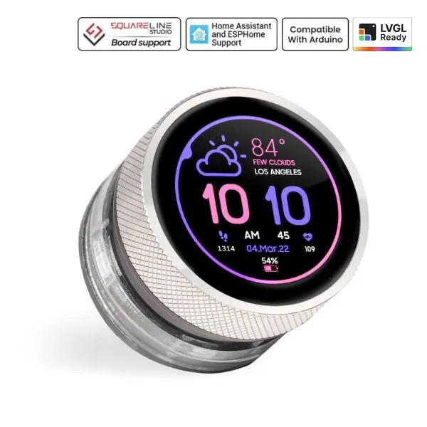

CrowPanel 1.28" Rotary
Elecrow · Elecrow CrowPanel 1.28" HMI rotary knob – ESP32-S3 240×240 round IPS touch
CrowPanel 1.28" Rotary is an 1.28" 240x240 IPS Capacitive touch ESP32 display board by Elecrow based on the ESP32-S3 with 16MB flash, 8MB PSRAM.
Features, ports & interfaces
- Capacitive touch
- 8 MB PSRAM
- 16 MB flash
- Wi-Fi 4 (802.11 b/g/n, 2.4 GHz) – version from the ESP32-S3 datasheet
- Bluetooth 5 (LE) – version from the ESP32-S3 datasheet
- Serial port (UART): UART (ZX-MX 1.25-4P)
- I2C (ZX-MX 1.25-4P)
- Rotary knob with press switch
- Buttons: RESET, BOOT, knob press
- RGB LED: LED ambient light
- Enclosure / shell
Specifications
| Parameter | Value | Source |
|---|---|---|
| Screen size | 1.28" | source |
| Resolution | 240x240 | source |
| Panel | IPS | source |
| Shape | Round | source |
| Touch | Capacitive | source |
| MCU / SoC | ESP32-S3R8 (dual-core LX7, 240 MHz) | source |
| MCU family | ESP32-S3 | source |
| CPU frequency | 240 MHz | source |
| Flash | 16MB | source |
| PSRAM | 8MB | source |
| SRAM | 512KB | source |
| Wi-Fi | 802.11 a/b/g/n, 2.4 GHz | source |
| Bluetooth | Bluetooth Low Energy and Bluetooth 5.0 | source |
| SKU | DHE38128D | source |
| Category | Elecrow CrowPanel | |
| Buttons | RESET, BOOT, knob press | source |
| Dimensions | 48 x 48 x 33 mm | source |
| Rotary encoder | Rotary knob with press switch | source |
| I2C port | I2C (ZX-MX 1.25-4P) | source |
| RGB LED | LED ambient light | source |
| Case / shell | Yes – aluminium alloy + plastic + acrylic | source |
| UART port | UART (ZX-MX 1.25-4P) | source |
| Vendor | Elecrow |